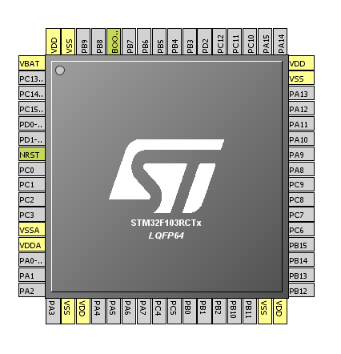
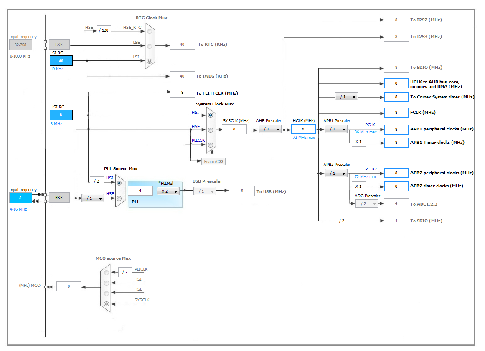

cube
Updated:
初步使用的感受
- 图形化向导显示STM32的引脚，时钟树，外设接口。这样在配置资源时，可以很清楚的知道有哪些可用，有哪些已经被占用。(如果ST能让配置完成的资源导出成sch就更完美了)

- 图形化显示时钟树可以更清楚的知道每个外设的时钟配置

优点
- 配置完成后，生成规范的直接可使用的工程(比如keil工程)。
生成的代码很规范，符合st官方库的代码规范，因此可以直接使用doxygen生成帮助文档。 - 支持直接配置FATFS,FREERTOS,USB中间层。
- CubeMX使用Java，因此跨平台性比较好(Mac和Linux都可以用，虽然并没什么卵用)
- 生成的代码采用分层机制(硬件抽象层(HAL),中间层，应用层)，系统层面使用起来逻辑清晰，代码可重用性更高。
缺点
- 隐藏了硬件操作细节，要是从cube入门，容易写出bug。
- 占用资源变多，适用工程大，资源宽松的项目。
切换到另外一个MCU
- New Project
- 选择MCU型号
- Import Project
- 弹出的对话框选Try Import
TODO
- [x] 重新生成代码后，是否可以不覆盖原代码
代码中有特殊的标记段：
1 | /* USER CODE BEGIN WHILE */ |
比如上面的1
2/* USER CODE BEGIN WHILE */
/* USER CODE END WHILE */
包起来的部分。在使用cube重新生成工程时，不会覆盖掉中间的部分。如果放在1
2
3/* USER CODE END WHILE */
/* USER CODE BEGIN 3 */
中间就会被覆盖掉。
综上，若想代码不覆盖掉，需要使用1
2/* USER CODE BEGIN xxx */
/* USER CODE END xxx */
包起来。
- [x] 阅读cube的帮助文档 UM1718
关于上面一点，帮助手册也有说明：
The C code generated by STM32CubeMX provides user sections as illustrated below. They
allow user C code to be inserted and preserved at next C code generation.
User sections shall neither be moved nor renamed. Only the user sections defined by
STM32CubeMX are preserved. User created sections will be ignored and lost at next C
code generation.
/ USER CODE BEGIN 0 /
(..)
/ USER CODE END 0 /
Note: STM32CubeMX may generate C code in some user sections. It will be up to the user to
clean the parts that may become obsolete in this section. For example, the while(1) loop in
the main function is placed inside a user section as illustrated below:
/ Infinite loop /
/ USER CODE BEGIN WHILE /
while (1)
{
/ USER CODE END WHILE /
/ USER CODE BEGIN 3 /
}
/ USER CODE END 3 /有提到一个自定义配置格式 freemarker可以关注一下,其他内容是讲软件怎么用，没有太多需要关注的。
[ ] 阅读 UM1850 Description of STM32F1xx HAL drivers，了解生成的代码结构
cube生成的代码严格按照 ANSI-C标准，使用CodeSonar静态分析工具检查过，全部文档化，并且兼容MISRA-c 2004(工业软件安全性的C语言编码规范).
前两章是整体介绍cube生成的HAL怎么用，需要详细阅读。后面是介绍各个HAL库，用到的时候再看。
- HAL库的一些特性：
- 包含了常用外围设备的驱动
- 三种编程模型：查询(polling)，中断(interrupt)，DMA
- RTOS兼容(可重入),自己的代码也最好保持可重入
- 回调函数机制
- 所有的阻塞块(while等待)都有超时机制
新的数据结构
Peripheral handle structure
1
2
3
4
5
6
7
8
9
10
11
12
13
14
15
16
17
18
19
20
21
22
23
24
25
26
27
28
29
30
31
32/**
* @brief USART handle Structure definition
*/
typedef struct
{
USART_TypeDef *Instance; /*!< USART registers base address */
USART_InitTypeDef Init; /*!< Usart communication parameters */
uint8_t *pTxBuffPtr; /*!< Pointer to Usart Tx transfer Buffer */
uint16_t TxXferSize; /*!< Usart Tx Transfer size */
__IO uint16_t TxXferCount; /*!< Usart Tx Transfer Counter */
uint8_t *pRxBuffPtr; /*!< Pointer to Usart Rx transfer Buffer */
uint16_t RxXferSize; /*!< Usart Rx Transfer size */
__IO uint16_t RxXferCount; /*!< Usart Rx Transfer Counter */
DMA_HandleTypeDef *hdmatx; /*!< Usart Tx DMA Handle parameters */
DMA_HandleTypeDef *hdmarx; /*!< Usart Rx DMA Handle parameters */
HAL_LockTypeDef Lock; /*!< Locking object */
__IO HAL_USART_StateTypeDef State; /*!< Usart communication state */
__IO uint32_t ErrorCode; /*!< USART Error code */
}USART_HandleTypeDef;
如上定义了USART常用功能的一些数据结构，初始化，buffer，计数器，DMA，通讯状态，锁等等。设计到系统层面的东西较多，暂时不懂
- 回调函数
- peripheral initialization/de-intialization
- 进程完成回调，比如USART发送数据完成回调
- 错误处理回调
[ ] 了解FreeRTOS
- cube的帮助手册中有提到，FreeRTOS + LwIP + FATFS + USB的构架。若是能使用cube协助生成工程，会很方便。FreeRTOS官网
[ ] 了解怎样配置USB
- STM32Cube USB device library这个文档介绍了怎样使用cube来配置USB device。
6.15初步配置USB VCP，并测试发送数据成功。配置步骤如下：
- cube中usb设置保持默认
- 修改startup文件，将堆的值改为 0x00001500
在main中添加
1
CDC_Transmit_FS(TxBuffer,5)
打开串口就能看到发送的5个字节的数据了(电脑上得装STSW-STM32102)。
- 注意代码烧录完成后，重新插拔一次USB。